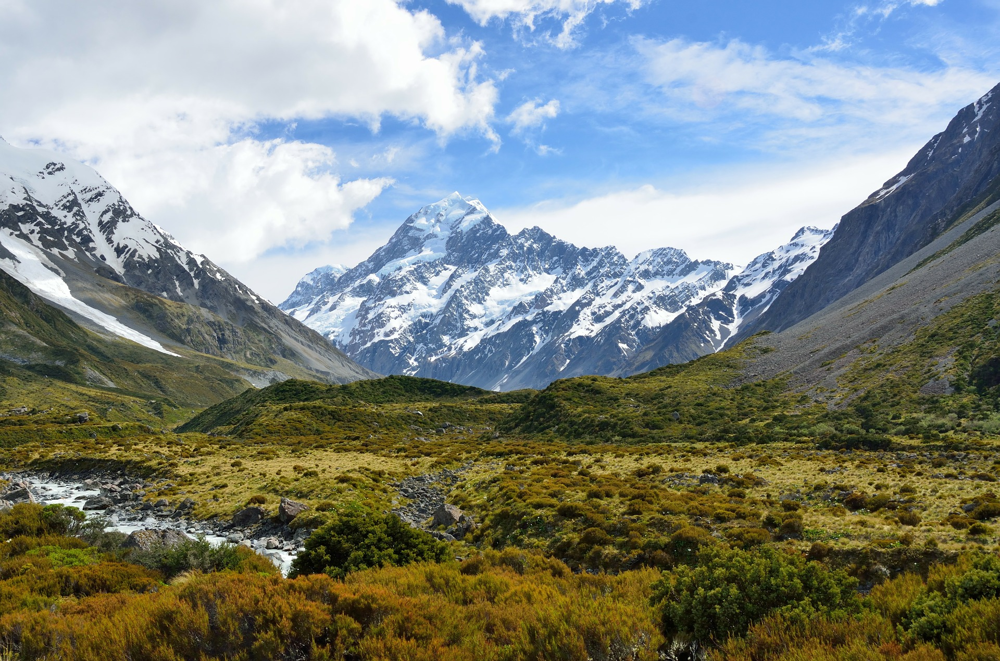

marche Blue Cow dans les Alpes pennines
Une marche de 2 jours dans les Alpes suisses est organiser par la fondation BlueCow pour fêter ses 50 ans d'existance. Venez fêtez avec nous cet anniversaire exeptionnel! vous serez ravi d'apprendre que toutes nos boissons serons offertes durant cette évènement.Cette marche n'est pas des plus simples et vous donnera du fil à retordre mais au final vous serez fier de vos exploits.